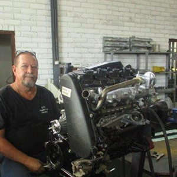

Richards Bay · Since 1967
Precision engineering.
Built on experience.
Engine reconditioning, diesel injection repairs and vehicle servicing from our Alton workshop.

Diesel & Auto EngineeringAlton, Richards Bay
- Petrol & diesel engines
- Cars, trucks & heavy equipment
- Workmanship warranty
What we do
Expertise where it matters.
01 / ENGINEERING
Engine machining & reconditioning
Precision repairs for your engine and components.
Explore machining →02 / DIESEL INJECTIONDiesel pumps & injectors
Fuel injection repairs and exchange components.
Explore diesel services →03 / WORKSHOPServicing & diagnostics
Support for cars, trucks and heavy equipment.
Explore workshop services →
Experience you can turn to
Local roots.
Precision workmanship.
Serving Richards Bay since 1967, we bring automotive engineering and diesel fuel injection expertise together under one roof.
Get to know D.A.E. →